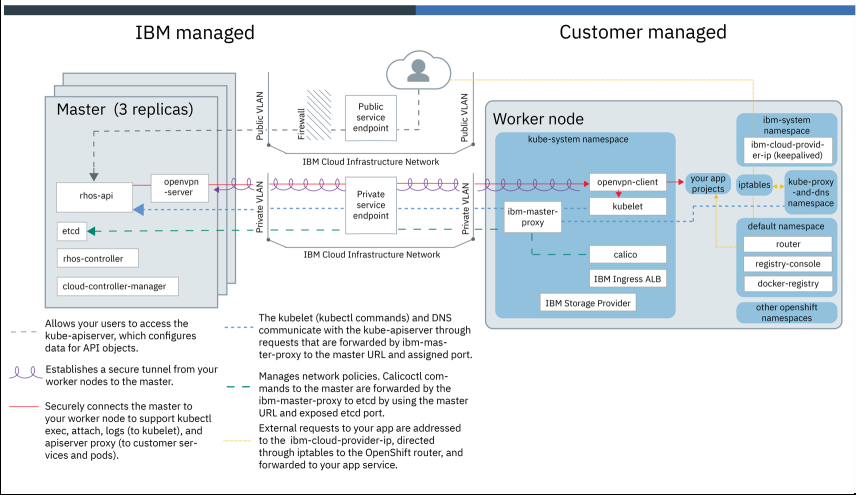

Create OCP cluster
IBM Cloud allows the creation of managed OpenShift clusters. The architecture of this service is shown on the figure below, with more information available here.

To deploy a managed OpenShift cluster on IBM Cloud, ensure that you have the following IBM Cloud IAM access policies:
- The Administrator platform role for IBM Cloud Kubernetes Service
- The Writer or Manager service role for IBM Cloud Kubernetes Service
- The Administrator platform role for IBM Cloud Container Registry
Make sure that the API key for the IBM Cloud region and resource group is set up with the correct infrastructure permissions, Super User, or the minimum roles to create a cluster.
Once your account has the above IAM policies:
- Log in to your IBM Account.
- Select Kubernetes from the hamburger menu and click
Create Cluster. - For Select a plan, choose Standard.
- For the Cluster type and version, choose OpenShift. Red Hat OpenShift on IBM Cloud supports OpenShift version 3.11 only, which includes Kubernetes version 1.11. The operating system is Red Hat Enterprise Linux 7.
- Fill out your cluster name, resource group, and tags.
- For the Location, set the geography to North America or Europe, select either a Single one availability zone, and then select Washington, DC or London worker zones.
- For Default worker pool, choose an available flavor for your worker nodes, ideally with at least 16 cores and 32 GB RAM.
- Set a number of worker nodes to create per zone; We will use 4 nodes for our cluster.
- Finish by clicking on
Create cluster. - From the cluster details page, click OpenShift web console.
- From the dropdown menu in the OpenShift container platform menu bar, click
Application Console. The Application Console lists all project namespaces in your cluster. You can navigate to a namespace to view your applications, builds, and other Kubernetes resources.
Prepare a boot node
As the master nodes are managed by IBM Cloud and cannot be accessed via ssh, we have to choose a boot node to proceed further with the installation. The boot node can be a linux VM or your Mac laptop. The boot node needs to have sufficient disk space and latest version of the docker installed. Additionally on the boot node, various CLIs need to be installed.
Install ibmcloud CLI
ibmcloud can be installed using curl -sL https://ibm.biz/idt-installer | bash.
Once installed, verify access:
- Run
ibmcloud login -sso - Get the onetime code to login and then select the appropriate account you have deployed the OpenShift cluster to.
- Run the command
ibmcloud ks clusterswhich displays the OpenShift clusters.
Install oc CLI
For information about how to install the OpenShift CLI oc on your operating system's path, see the docs. Once installed, from the OpenShift web console menu bar, click your profile IAM#user.name@email.com > Copy Login Command. Paste the copied oc login command into your terminal to authenticate via the CLI.
Load the Cloud Pak images
Download the Cloud Pak from Software Downloads or Passport Advantage. To load the package into managed OpenShift internal registry, you need to sign into the docker registry. To login to the docker registry, use the command:
docker login -u $(oc whoami) -p $(oc whoami -t) docker-registry.default.svc:5000
The above command fails as docker-registry.default.svc is not accessible from outside. To expose that, open another command window. Login to OpenShift (oc, kubectl commands should be able to run).Run the command:
kubectl -n default port-forward svc/docker-registry 5000:5000 &
This exposes port 5000 on the boot node (wherever this is run). You need to leave the window open or else the port-forwarding will stop. Update /etc/hosts with 127.0.0.1 docker-registry.default.svc and you can now login to Docker.
Install Helm
- Create namespace tiller:
oc new-project tiller
oc project tiller
- Add the line into file
~/.bash_profileand apply the environment variable change
export TILLER_NAMESPACE=tiller
source ~/.bash_profile
- Initialize Helm
wget https://get.helm.sh/helm-v2.14.2-linux-amd64.tar.gz
tar xzvf helm-v2.14.2-linux-amd64.tar.gz
cd linux-amd64
chmod 755 helm
rm -rf /usr/local/bin/helm
mv helm /usr/local/bin/helm
helm init --client-only
- Create Tiller by OpenShift template:
oc process -f https://github.com/openshift/origin/raw/master/examples/helm/tiller-template.yaml -p TILLER_NAMESPACE="tiller" -p HELM_VERSION=v2.14.2 | oc create -f -
oc rollout status deployment tiller
helm version
Setup shared services
Setup NFS
- Install NFS:
yum install nfs-utils
- Create share folders:
mkdir -p /data/persistentvolumes
mkdir -p /data/casemanagement
- Add the share folders paths into file
/etc/exports:
/data/persistentvolumes *(rw,sync,no_root_squash)
/data/casemanagement *(rw,sync,no_root_squash)
- Start NFS:
systemctl enable nfs-server.service
systemctl start nfs-server.service
Setup DB2
Using DB2 version v11.1.1.1 (required for BACA).
- Unpack installation files:
yum install unzip
tar xzvf DB2_AWSE_REST_Svr_11.1_Lnx_86-64.tar.gz
unzip DB2_AWSE_Restricted_Activation_11.1.zip
- Install DB2 by response file:
/data/downloads/db2/server_awse_o/db2setup -r /root/db2/db2server-dba.rsp
- Add license:
/opt/ibm/db2/V11.1/adm/db2licm -a /data/downloads/db2/awse_o/db2/license/db2awse_o.lic
- You can ignore the following warning while installing DB2:
Summary of prerequisites that are not met on the current system:
DBT3514W The db2prereqcheck utility failed to find the following 32-bit library file: "/lib/libpam.so*".
DBT3514W The db2prereqcheck utility failed to find the following 32-bit library file: "libstdc++.so.6".
- Upgrade DB2 from v11.1.0 to v11.1.1.1:
tar xzvf special_36118_linuxx64_universal_fixpack.tar.gz
## Stop the instance db2inst1
su - db2inst1
db2 list application
db2 force applications all
db2 terminate
db2stop force
db2licd -end
exit
ps -ef |grep db2fm
/opt/ibm/db2/V11.1/bin/db2fmcu -d
/opt/ibm/db2/V11.1/bin/db2fm -i db2inst1 -D
## Disable auto start
/opt/ibm/db2/V11.1/instance/db2iauto -off db2inst1
su - db2inst1
ipclean
exit
su - dasusr1
/opt/ibm/db2/V11.1/das/bin/db2admin stop
exit
## Upgrade DB2
cd /data/downloads/db2/fixpack11.1.1/universal
./installFixPack -b /opt/ibm/db2/V11.1
## Upgrade DB2 instance
/opt/ibm/db2/V11.1/instance/db2iupdt db2inst1
/opt/ibm/db2/V11.1/instance/db2iauto -on db2inst1
su - db2inst1
db2start
db2level
exit
- Create the ODM database:
su - db2inst1
db2start
db2 create database odmdb automatic storage yes using codeset UTF-8 territory US pagesize 32768;
db2 connect to odmdb
db2 list applications
Setup IBM SDS
Using IBM Security Directory Server version 6.4.
- Mount SDS ISO:
mkdir /mnt/iso
mount -t iso9660 -o loop /data/downloads/sds/sds64-linux-x86-64.iso /mnt/iso/
- Install SDS:
yum install ksh
# setup ldap user and group
groupadd idsldap
useradd -g idsldap -d /home/idsldap -m -s /bin/ksh idsldap
passwd idsldap
## enter <password>
usermod -a -G idsldap root
groups root
# skip db2 installation
mkdir -p /opt/ibm/ldap/V6.4/install
touch /opt/ibm/ldap/V6.4/install/IBMLDAP_INSTALL_SKIPDB2REQ
# install gskit
cd /mnt/iso/ibm_gskit
rpm -Uhv gsk*linux.x86_64.rpm
# install sds rpms
cd /mnt/iso/license
./idsLicense
## Enter 1 to accept the license agreement
cd /mnt/iso/images
rpm --force -ihv idsldap*rpm
cd cd /data/downloads/sds
unzip sds64-premium-feature-act-pkg.zip
cd /data/downloads/sds/sdsV6.4/entitlement
rpm --force -ihv idsldap-ent64-6.4.0-0.x86_64.rpm
# install ibm jdk
cd /mnt/iso/ibm_jdk
tar -xf 6.0.16.2-ISS-JAVA-LinuxX64-FP0002.tar -C /opt/ibm/ldap/V6.4/
# setup db2 path
vi /opt/ibm/ldap/V6.4/etc/ldapdb.properties
currentDB2InstallPath=/opt/ibm/db2/V11.1
currentDB2Version=11.1.0.0
# create and configure instance
cd /opt/ibm/ldap/V6.4/sbin
./idsadduser -u dsinst1 -g grinst1 -w <password>
# Enter 1 to continue
# create instance
./idsicrt -I dsinst1 -p 389 -s 636 -e mysecretkey! -l /home/dsinst1 -G grinst1 -w <password>
# Enter 1 to continue
# configure a database for a directory server instance.
./idscfgdb -I dsinst1 -a dsinst1 -w <password> -t dsinst1 -l /home/dsinst1
# set the administration DN and administrative password for an instance
./idsdnpw -I dsinst1 -u cn=root -p <password>
# Add suffix
./idscfgsuf -I dsinst1 -s o=IBM,c=US
- Start SDS Server:
./ibmslapd -I dsinst1
./ibmdiradm -I dsinst1